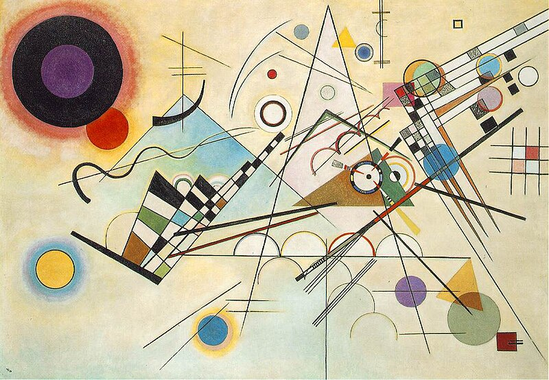
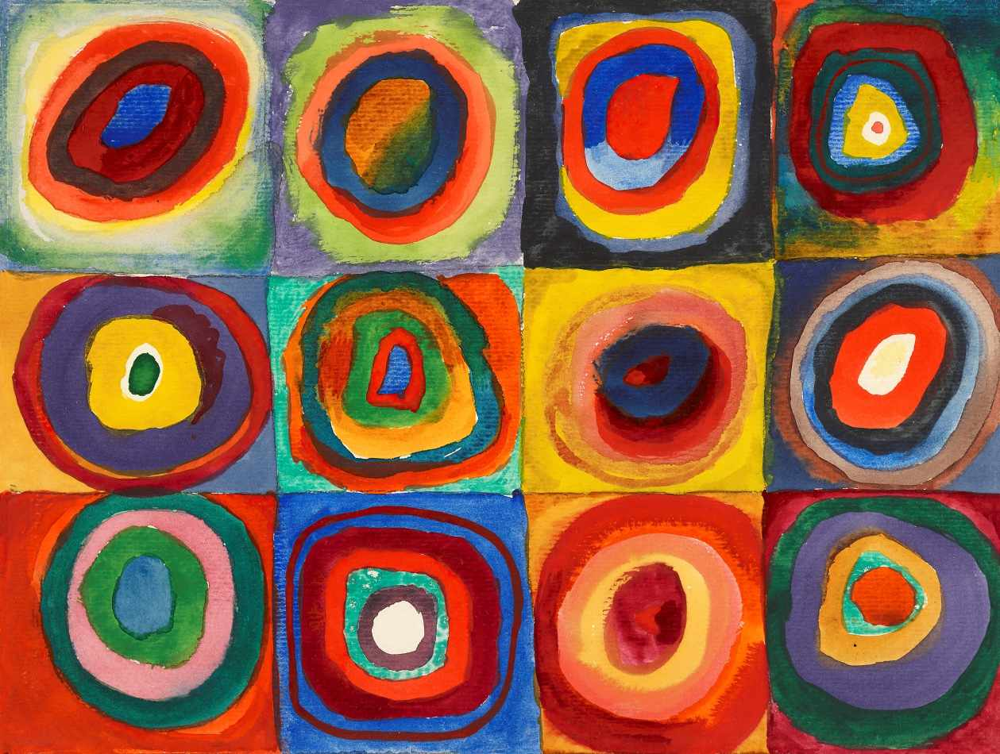

Wassily Kandinsky (1866-1944) foi um pintor russo e um dos pioneiros da arte abstrata. Sua obra é reconhecida pela exploração das formas geométricas e cores vibrantes, sendo considerado um dos artistas mais influentes do século XX. Kandinsky acreditava que a arte poderia expressar sentimentos e emoções sem a necessidade de representar o mundo real. Suas obras mais notáveis exploram a espiritualidade por meio da abstração.
Maiores Obras:

Composição VIII

Quadro com Círculos

Composição X